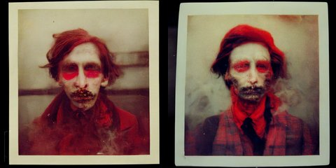

by Athena Novo · Async Art Master #9818 · day/night · time rule: UTC
Updates twice a day to reflect day / night cycles.

Day 06:00–18:59 · Night 19:00–05:59 (UTC)
The full-size files live on IPFS; each is linked on three public gateways, in the order to try them (gateway.pinata.cloud, ipfs.io, dweb.link). Every line says what our own check found: 3 we keep this file pinned, 1 our own copy, pinned here and verified on upload.
QmSVETJCSS4CdA… gateway.pinata.cloud · ipfs.io · dweb.link — we keep this file pinned, checked 2026-09-23 09:13QmRM6gUrBvWXJi… gateway.pinata.cloud · ipfs.io · dweb.link — we keep this file pinned, checked 2026-09-23 09:13bafybeibyfwa7n… gateway.pinata.cloud · ipfs.io · dweb.link — our own copy, pinned here and verified on upload, checked 2026-09-22QmX6EBr5i4NETv… gateway.pinata.cloud · ipfs.io · dweb.link — we keep this file pinned, checked 2026-09-23 09:13QmSVETJCSS4CdA… gateway.pinata.cloud · ipfs.io · dweb.link — we keep this file pinned, checked 2026-09-23 09:13QmSVETJCSS4CdA… gateway.pinata.cloud · ipfs.io · dweb.link — we keep this file pinned, checked 2026-09-23 09:13QmRM6gUrBvWXJi… gateway.pinata.cloud · ipfs.io · dweb.link — we keep this file pinned, checked 2026-09-23 09:13New York Polaroids: Matyas is NOT Matthew 2 Artworks in 1 Daily Cycle New York Polaroids by Athena Novo, Summer of 2022, An Alternative New York during the NFT Summit, Minted 1/1 on Async Art While everyone was enjoying the NFT Summit, a different group of visitors were in New York. Some call them demons, monsters and zombies while I would prefer more neutral terms but nonetheless here are some of the photographs I've taken of them which I release with full disclosure and their cooperation. The prospective collectors should acknowledge the existence of "undead" and some even more exotic characters might cause some alarm among the general population. Therefore viewer caution is warranted…
async.art · OpenSea · Etherscan
Generated archive pages. Content identifiers point to the public IPFS network.